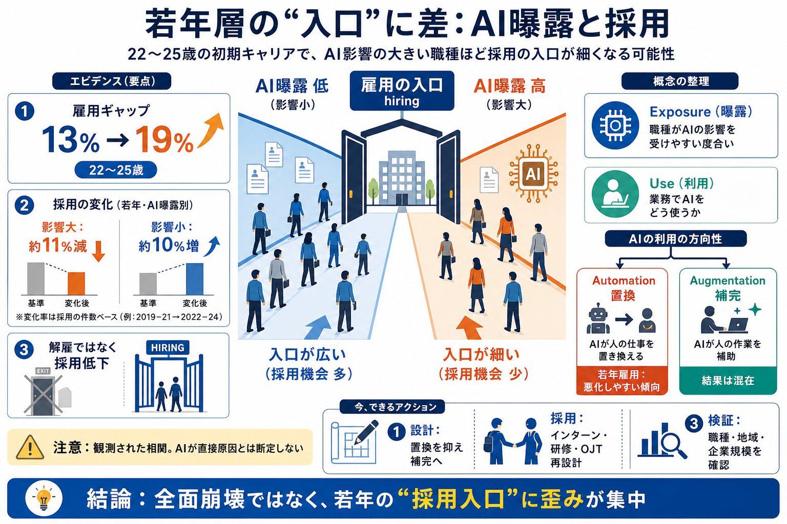

AI and Jobs in 2026: What the Labor Data Really Shows
The demand side is moving faster than the displacement side, and it's measurable today rather than projected. AI skills …

スタンフォード研究にもとづき、「AIに触れる（曝露される）仕事」と若年層の雇用機会の関係を整理します。
AIが仕事を「奪う」だけとは限りません。重要なのは、どの仕事がAIの影響を受けやすく、どの局面（特に採用）で差が出ているかです。
解雇より「採用（hiring）」が鈍ると、次に働き手になれるはずの若者が入口で弾かれます。結果は“在職者の減少”より“機会の差”として見えやすくなります。
本整理は「曝露（exposure）」と「利用（use）」を分けて読みます。曝露は影響を受けやすさ、利用は日常業務でのAIの使い方です。
職種がAIの影響を受けやすいか
職種が実際にAIをどう使うか
22〜25歳の若年層で、AIに曝露されやすい職種と低い職種の間の雇用ギャップが「13%→19%」に拡大したと要約されています。
22〜25歳（初期キャリア）
雇用水準の差（ギャップ）
13%→19%
差の中心は解雇や退職の増加ではなく、「採用（hiring）の弱まり」にある、と整理されています。雇用の入口が細くなることが示唆されます。
主因とはされにくい
主因として強調
2022年以降、AIの影響が大きい職種では22〜25歳の雇用が約11%減、影響が小さい職種では約10%増と要約されています。
雇用：約11%減
雇用：約10%増
研究はAIの利用を2タイプに分けます。置換（automation）ほど若年の雇用が悪化しやすい傾向が示されます。
AIが人の仕事を置き換える方向
AIが人の作業を補助する方向
少なくとも要約の範囲では、オートメーション志向のAIがある職種ほど若年層の雇用が相対的に悪化しやすい、という方向性が示されています。
若年雇用：悪化しやすい傾向
結果：混在（一定の守りとは言いにくい）
“必ず減る”ではなく相関
要約でも明記されている通り、提示されるのは因果の証明ではなく観測された関係です。AI利用と雇用変化は、他要因でも同時に動き得ます。
曝露/利用と雇用の関係（観測）
AIが直接“原因”と断定
経済全体では雇用差は小さく、強く影響が見えるのは一部の層・領域です。つまり“全面崩壊”ではなく“集中して歪みが出る”構図です。
差が小さい（要約）
限定領域・若年入口（要約）
O*NETの教育要件を使った分類で、形式知（codified knowledge）寄りの職種ほど若年の伸びが遅い可能性がある、と要約されています。AIが得意な領域と、経験依存の領域で差が出うるという視点です。
教育要件が中心
実務経験に依存
結論を「AIが奪う」で止めず、(1) 置換か補完か、(2) 若年の採用・研修・OJT設計をどう組み替えるか、に落とし込みます。
置換（automation）を抑える/再定義する
インターン・研修・OJTの入口を再設計
因果・職種・地域・企業規模の追加確認
22〜25歳で雇用ギャップが13%→19%へ拡大し、その中心は「解雇」ではなく「採用（hiring）」の弱まり。置換志向のAIで悪化しやすい一方、経済全体の波及は限定的（相関で因果断定は不可）という整理です。
本デッキはユーザー提示のニュース要約・前提に基づく再構成です（元論文・原典の手法詳細までは検証していません）。
The demand side is moving faster than the displacement side, and it's measurable today rather than projected. AI skills …
finding the results again looked similar: within firms, entry-level hiring in AI-exposed jobs declined 13% relative to l…
The finding doesn’t undercut the dashboard’s broader thesis about entry-level hiring — if anything, it sharpens it. Bryn…
4 comments ### Transcript: [Music] A new Stamford University study has found that artificial intelligence is rapidly cut…
The updated data strengthen several patterns we first documented in August 2025. Most notably, the employment gap for yo…